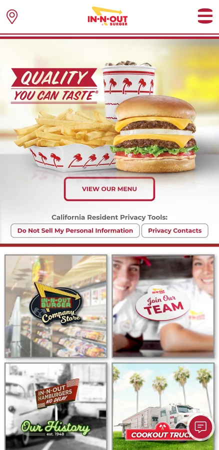

Hierarchy
On that website it is possible to see the order of the elements we are suppose to look first, second and so on. The first one it is the hamburger given by its size, second we are driven to the word "quallity" thanks to its red backgound color, third our eyes are caught by the company logo, the red and yellow give it a great contrast driven our attention to it and the last of all it is the invitation to see the menu.
Rule of Thirds
On that website it is possible to see The Rule Of Thirds on the image of the boy which is not centered which add more interest to the page and give it the sense of organization along with the left and centered alignment and the great use of the white space.
Occam's Razor
On that Webpage we can see that principle of Occam´s Razor in which simplicity is better than complexity. The webpage displays simple font in his large portion and a few elements, it shows a very clean design with a lot of white space promoting legibility and driving focus.